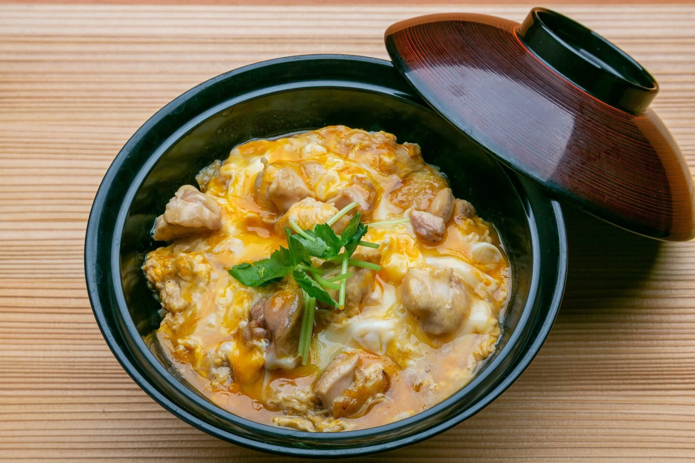

Oyako Don

Description
Oyakodon is a delicious traditional Japanese meal consisting of chicken sautéed and then cooked in a Japanese broth, and then finished with egg and served over rice. It's really easy, filling, and delicious.
Ingredients
- dashi stock
- chicken breast or Thigh
- Soya sauce
- Mirin
- Cooking Sake
- Leek
- Onion
- Eggs
Steps
- Heat oil in a large skillet over medium heat. Add chicken and cook until beginning to brown, about 5 minutes. Add onion; cook and stir until onion is translucent, about 5 minutes.
- Pour in stock, then whisk in soy sauce, mirin, and brown sugar; stir until sugar dissolves. Bring to a boil, then lower heat and simmer until slightly reduced, about 10 minutes
- Whisk eggs in a bowl until well-beaten, then pour into the hot stock mixture. Cover the skillet, reduce the heat, and steam until egg is cooked, about 5 minutes. Remove from the heat.
- Divide rice among 4 deep soup bowls and top with equal amounts of the soup mixture.